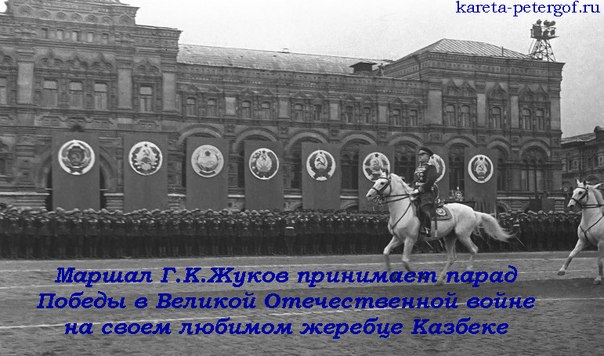

Знаменитые личности и их любимые лошади
В этой статье я расскажу о знаменитых лошадях знаменитых людей. Вы много слышали об этих людях, но у необычных людей и кони необычные. Немного поговорим об этих удивительных союзах – людей и лошадей. Некоторые из лошадей уже при жизни стали легендами, и каждая из них заслужила того, чтобы люди пронесли через года память о них и их поступках.
Казбек и Георгий Жуков
Идея принимать парад на белом коне принадлежала Сталину, но сам он предложил принимать парад Победы Жукову, несмотря на то что именно Иосиф Виссарионович являлся главнокомандующим. Однако Сталин не умел сидеть в седле, тогда как Жуков, прошедший обучение в лучших традициях офицерской выучки царских времен, смотрелся в седле гордо и представительно. Многие до сих пор спорят, действительно ли Казбек под седлом у Жукова, т.к. к параду готовился самым тщательным образом конь Кумир. Его мыли дважды с день с мылом для ослепительной белизны, его тренировали не бояться громких звуков и гарцевать на брусчатке. Однако, на параде под седлом Жукова оказался Казбек и это доподлинно известно. Видимо что-то случилось накануне парад с Кумиром, и это дало повод к слухам и сплетням. Впоследствии многие конезаводчики утверждали, что именно их питомец принимал парад вместе с Жуковым, но это не более чем рекламный ход. Казбек — яркий представитель ахалтекинский породы славился спокойным темпераментом, гибкостью движений, силой ума. Он составил достойную компанию прославленному полководцу. Так что в 1945 году на глазах миллионов зрителей Жуков принимал парад Победы на самом известном и титулованном коне Казбеке.